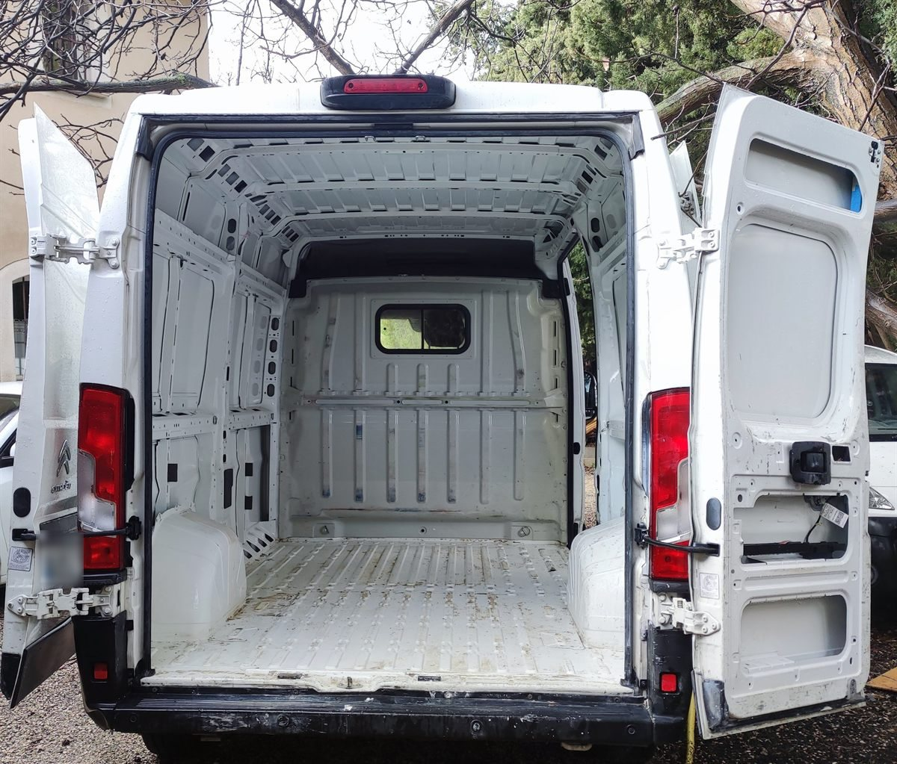
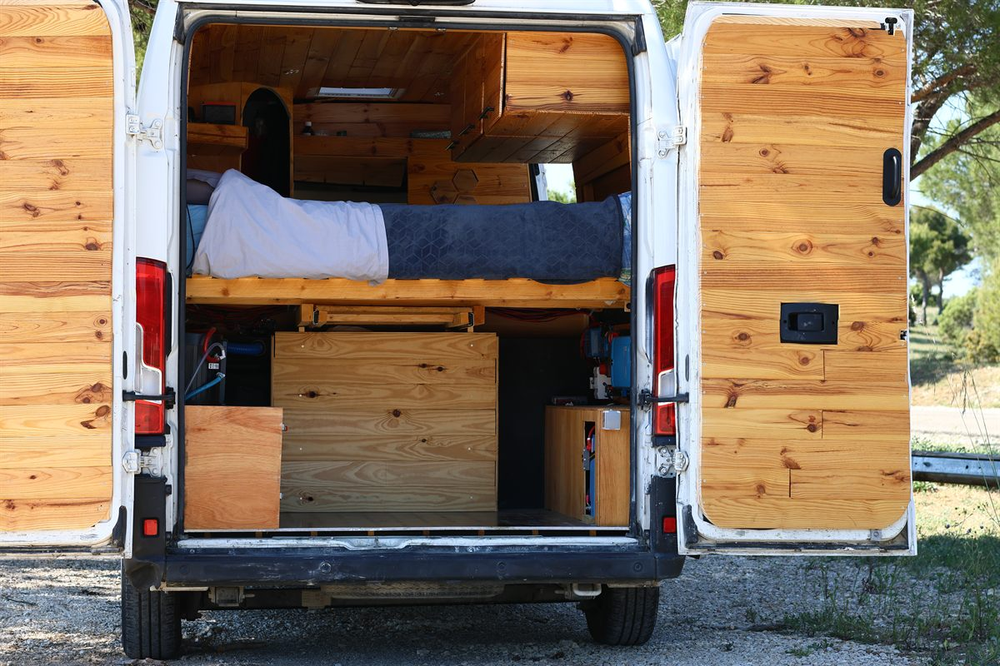
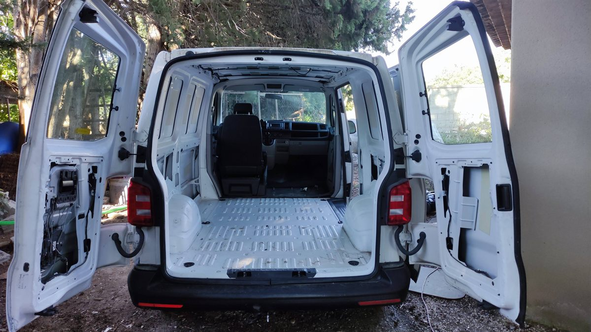
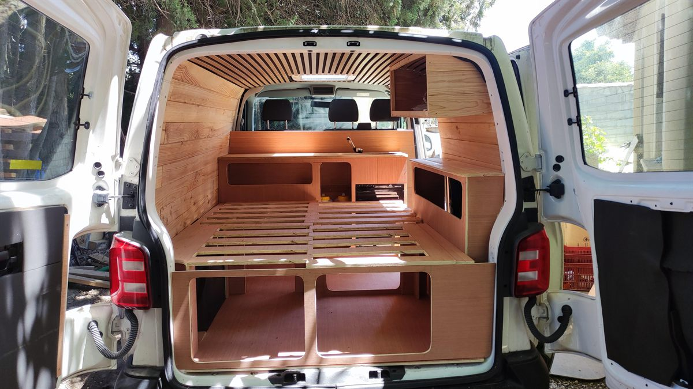
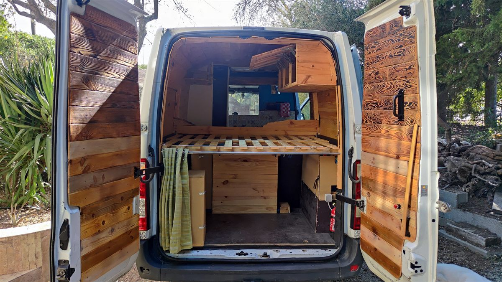

Complet
Citroën Jumper : aménagement complet
Parti d'un fourgon vide : isolation, fenêtre, électricité, cuisine, douche, lit et habillage en bois.
Faites glisser le curseur sur chaque photo pour comparer le véhicule avant et après mon intervention.


Parti d'un fourgon vide : isolation, fenêtre, électricité, cuisine, douche, lit et habillage en bois.


Plafond en lames de bois, lit avec rangements dessous et meuble cuisine avec évier.

Le premier van que j'ai aménagé, avant de le revendre.
Une prestation ciblée ou un aménagement complet : parlons de votre projet.